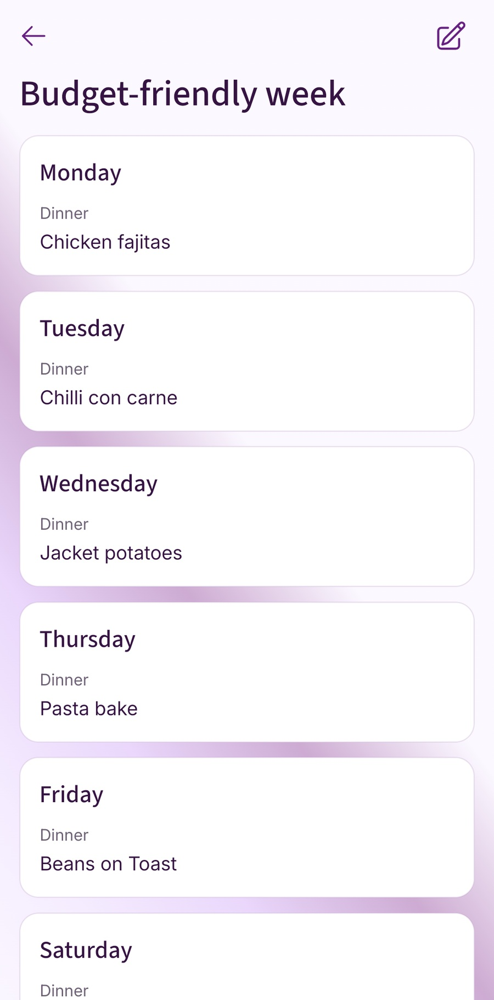

AI can help you plan family meals, especially when you need a fresh dinner idea or a way to rearrange a difficult week. Give it the details that matter, check the suggestions and keep the meals that work for your household.
A neat five-day menu is only a starting point. Someone still needs to check that the portions make sense, the ingredients fit the shop and Wednesday's dinner can happen between getting home and leaving for a club.
You can use AI alongside a reusable meal plan. Begin with familiar dinners, ask for help where you're stuck and save useful additions so next week has less work in it.
Where AI can help with family meals
A conversational AI tool such as ChatGPT can help you brainstorm and compare options, then revise an answer when you add more information. OpenAI's official ChatGPT guidance also says to check important details: a well-written response can still contain errors or unsupported assumptions.
For meal planning, a small request can be useful. Ask for a couple of dinners using potatoes and eggs, a different way to serve a familiar ingredient, or help moving your existing meals around two late finishes. You can reject an idea and explain why: too much preparation, ingredients nobody else will use, or something the family tried and didn't enjoy.
New ideas are useful when you're bored with the usual options. If the problem is remembering which dinners worked and turning them into the shop, start by keeping those meals somewhere you can reuse them. Our guide to meal planning apps and notes looks at the repeated work each tool can help with.
Give it an ordinary household brief
Before asking for a menu, write down who's eating, the evenings with little cooking time, familiar meals, ingredients already at home and any requirements the suggestions must meet. Include quantities where you know them. “We have pasta” says less than “we have 250 g of dry pasta”.
Ask for the result in a form you can check: dinner ideas, ingredients to confirm and questions about missing information. OpenAI's prompting guidance recommends supplying useful context, stating the result you need and refining it with follow-up messages.
A prompt you can adapt
Help me choose five weekday dinners for two adults and two school-aged children in the UK. We like mild meals and don't enjoy mushrooms. Familiar dinners include tomato pasta, omelettes, bean chilli and wraps.
We have 1 kg potatoes, 6 eggs, 250 g dry pasta, 2 tins of chopped tomatoes and frozen peas. Monday and Wednesday need about 20 minutes from starting preparation to serving. Tuesday and Thursday have about 35 minutes. Keep Friday flexible.
Suggest a draft with familiar meals and one new idea. Use grams and Celsius where relevant. Flag missing information and ingredients to check or buy. Don't assume those quantities cover every meal, and leave prices uncosted.
Change those details to fit your week. The cooking times are limits you're asking the plan to meet; check them against the recipe and your kitchen. You can describe preferences without including names, school details or other identifying information.
Compare two approaches to the same week
Take the household in the prompt above. One approach starts with dinner suggestions; the other starts with a saved family week. This is an illustrative planning example, with no live AI product test behind the two columns. The meal names still need checked recipes, quantities and cooking times.
On a smaller screen, scroll the table sideways to see both approaches.
| Evening and available time | Starting from ideas | Starting from a saved family week |
|---|---|---|
| Monday: about 20 minutes | Tomato and pea pasta | The household's usual tomato pasta |
| Tuesday: about 35 minutes | A mild chickpea curry with rice | A familiar bean chilli with rice |
| Wednesday: about 20 minutes | Pea omelettes with toast | The usual omelettes with toast |
| Thursday: about 35 minutes | A potato and bean pan meal | A familiar potato hash |
| Friday: flexible | Chickpea wraps, if the family wants to try them | The household's usual wraps, with fillings decided before shopping |
Both columns can lead to a useful plan. Familiar meals may need less recipe checking because you've cooked them before. A new idea may make the week more appealing, and it can become a regular meal if everyone enjoys it.
Now check the details. The 250 g of pasta is an amount available, not proof that Monday's recipe has enough for everyone. The potatoes must cover the recipe you choose. Rice, bread, beans, chickpeas, seasonings and fillings still need a cupboard check. Two different meal names may also draw on the same tin of tomatoes.
You could keep four familiar dinners and try one new idea on an evening with more room. You can also give an AI tool your own saved meals and ask it to arrange them. The useful choice is how much new thinking this particular week needs.
Check the plan before shopping
Match ingredients and portions to real recipes
Open the recipe you'll actually cook. Check serving sizes, quantities, preparation and the ingredients hidden inside sauces or toppings. A meal name on its own doesn't tell you how much to buy.
Combine the ingredients from the chosen recipes, then subtract what is genuinely available at home. Check that something used on Monday hasn't also been counted as available on Thursday. Our meal-plan-to-shopping-list guide covers that step in detail.
Check time and cost against your household
Look at the whole cooking job: chopping, preheating, cooking and getting everything ready to serve. A short active preparation time can still mean a long wait for dinner. Make sure the person cooking has the equipment and time the recipe needs.
A generated budget total needs checking too. Use current prices from the retailer you'll shop with, account for pack sizes and include any cupboard ingredients you need to replace. The cost of the portion used in a recipe and the amount paid at checkout can be different. A draft menu alone doesn't establish that your household will save money.
Keep food safety and dietary checks with the household
A suggested use-up meal doesn't establish that the food is safe to use. Follow the storage instructions and date labels on the products. The Food Standards Agency's date-label guidance explains that use-by dates concern safety and best-before dates concern quality. Don't assume food is safe after its use-by date because it looks or smells fine. Food cooked or frozen on or before that date needs the separate storage and defrosting checks described in the guidance.
If someone has a food allergy, check the actual ingredients and labels, including relevant precautionary warnings, and follow their allergy plan. An AI description such as “nut-free” isn't a safety assurance. See the NHS food-allergy advice and the FSA's allergen-labelling guidance.
A five-dinner menu also isn't an assessment of the household's whole diet. The NHS Eatwell Guide looks at balance across a day or week and does not apply to children under two. For medical needs or special dietary requirements, use advice from an appropriate health professional or registered dietitian.
Keep a reusable plan of meals that work
Once you've checked a recipe and cooked a dinner the household enjoys, keep it. Record the quantities that worked, any changes and the kind of evening it suits. You can do this on paper, in notes or in a meal planning app.
A saved week gives you something to adapt when the calendar changes. Move a quick dinner to the late finish, swap one meal to use food already available and leave space for a flexible evening. Our repeatable family meal planning routine explains how to build that habit.
Where Fameally fits
Fameally's planning workflow connects saved meals, weekly plans and shopping lists built from meal ingredients. You can keep a checked recipe that worked for your household and use it in another week, whether the original idea came from a cookbook, a friend or an AI conversation.

Saving full weekly plans for reuse is included in Individual and Family; Family also provides a shared household workspace. Check the current plans for the access you need.
Start from meals and quantities you've chosen, then review the resulting list against what is at home. The workflow shown here is organising and reusing your meals. An AI suggestion still needs your recipe, portion and suitability checks before it earns a place in that collection.
Try it with one ordinary week
Choose a week you can judge fairly. Keep familiar meals where they help and use AI for a gap you actually want help filling. You don't have to replace the whole plan to find out whether suggestions are useful.
Five steps for a useful trial
- Choose the job: one fresh dinner idea, a substitute or a rearrangement of known meals.
- Give the context: who's eating, available time, preferences and food already at home.
- Check the draft: recipes, quantities, dates, dietary suitability and the real shopping basket.
- Agree the plan: make sure the people cooking and shopping can find the same final version.
- Keep what worked: save the useful meal or week and change anything that made dinner harder.
Afterwards, ask whether you cooked the suggestions, whether anyone enjoyed them enough to repeat them and whether the planning felt easier. Include the time spent correcting the draft when judging its usefulness. If asking for ideas becomes another job, start next week with the meals you've already checked.
A few common questions
- Can I ask ChatGPT to plan family meals?
- Yes. Give it the household details that change the plan and ask for suggestions you can review. Check the recipes, ingredients, portions, timings and any safety or dietary claims before using the result.
- Will an AI meal plan reduce my food bill?
- It may suggest ways to use existing ingredients or avoid an extra purchase, but savings depend on what you actually buy and use. Compare the full shopping basket using current prices and pack sizes rather than accepting an estimated menu total.
- Can AI check whether a meal is safe for an allergy?
- A tool can help you look for possible issues, but its answer isn't an allergy safety check. Verify the actual ingredients, labels and relevant warnings, and follow the person's allergy plan and professional advice.
- Do I need to generate a new plan every week?
- No. Reuse meals or weeks that work, then ask for ideas when you want them. You can also ask for help arranging your own familiar meals around a changed schedule.
Sources and scope
Sources were checked on 24 October 2026. This guide discusses planning approaches; it doesn't rank AI models or report a product trial. The five-evening example is illustrative, with no tested recipes, prices or nutritional analysis attached.
- OpenAI: using ChatGPT and reviewing its results; writing and refining a prompt.
- FSA: best-before and use-by dates; allergen labelling.
- NHS: food allergy; the Eatwell Guide.
- Fameally's published planning workflow and current plan access.
Keep planning
Keep the meals your household enjoys.
Save checked recipes, fit familiar meals into the week and build the shopping list from their ingredients.